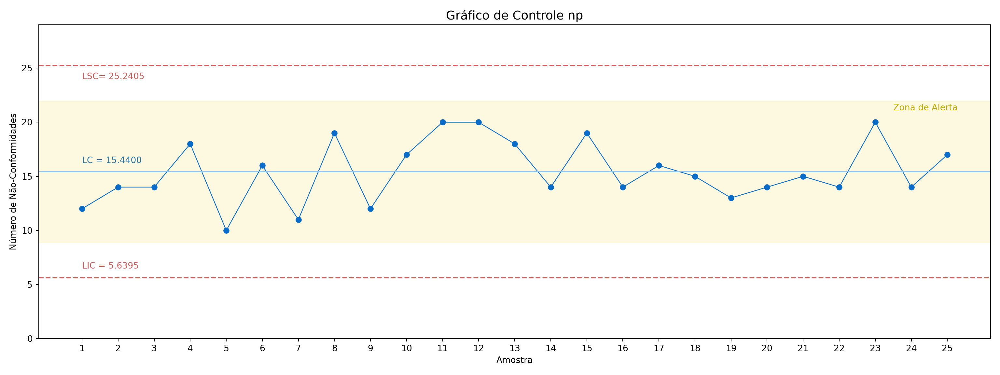
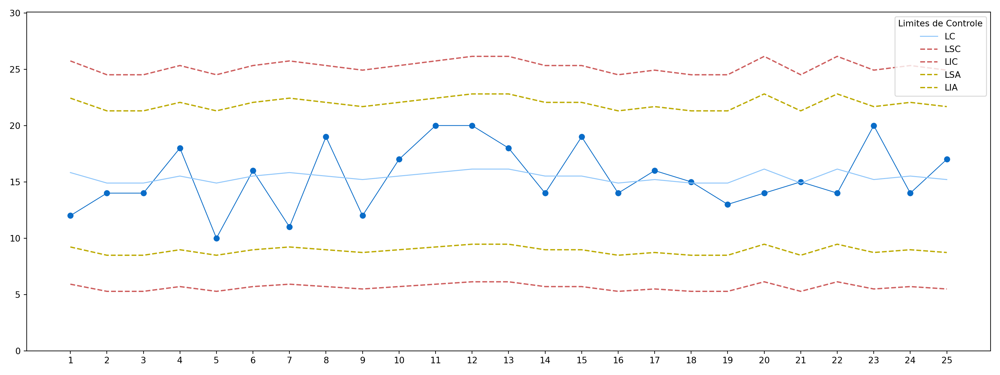

O gráfico \(p\) é uma ferramenta destinada ao monitoramento da proporção de unidades defeituosas em um processo produtivo. Esse gráfico é particularmente útil quando a característica de qualidade em estudo pode ser classificada de forma binária, isto é, como “defeituoso” ou “não defeituoso”.
Para cada amostra coletada é calculada a fração amostral não conforme, definida como a razão entre o número de unidades não conformes (ou seja, unidades defeituosas) na amostra \(D_i\) e o tamanho \(n\) da amostra, isto é, \[\hat{p_i} = \frac{D_i}{n}\] Sendo assim, a linha central para o gráfico \(p\) é dada por \(\hat{p}\) e os limites para o gráfico (±3\(\sigma\)) são dados por: \[LIC = \hat{p} - 3\sqrt\frac{\hat{p}(1 - \hat{p})}{n}\]\[LSC = \hat{p} + 3\sqrt\frac{\hat{p}(1 - \hat{p})}{n}\]
4.2.1 Exemplo
Selecionadas 19 amostras de tamanho \(n\) = 50, temos que:
É possível notar no gráfico que as amostras 6 e 10 ultrapassam o limite superior de controle, portanto, estão, estatísticamente, fora de controle.
4.3 Gráficos de Controle para \(np\)
Em determinados processos, os itens produzidos podem apresentar certo número de pequenas não conformidades que não o caracterizem como um item não conforme. No entanto, pequenas não conformidades em excesso pode ser perceptível (e indesejável) ao consumidor.
O gráfico \(np\) tem por objetivo o monitoramento do número de itens defeituosos em uma linha de produção, detectando possíveis problemas no processo quando há extrapolação dos limites de controle.
4.3.1 Gráfico \(np\) com Subgrupos Fixos
Quando o número de amostras coletadas é fixa ao longo do tempo, seus limites de controle e de advertência também o serão. Desta forma, os limites de controle do gráfico \(p\) com nível de operação \(3\sigma\) (\(L=3\)) são adaptados de tal forma que
A construção da carta de controle \(np\) considera o número de defeitos constados em cada amostra e, baseado nele, é calculado a proporção de defeitos. É possível a determinação de zonas de alerta, onde o processo ainda não sofreu efetivo descontrole, porém é dado um sinal de aviso. O processo deve ser monitorado com maior cautela em casos de tendência ou variações cíclicas e sucessivas.
Para contextualização o gráfico abaixo representa uma linha de produção com controle realizado feito a partir de \(n=50\) itens em cada amostra, com número de defeitos representado por \(D_i\).
([<matplotlib.axis.XTick object at 0x000002624CAE2F90>, <matplotlib.axis.XTick object at 0x000002624C789160>, <matplotlib.axis.XTick object at 0x000002624CB47650>, <matplotlib.axis.XTick object at 0x000002624CB06F60>, <matplotlib.axis.XTick object at 0x000002624CB05760>, <matplotlib.axis.XTick object at 0x000002624CB447A0>, <matplotlib.axis.XTick object at 0x000002624CAF7DA0>, <matplotlib.axis.XTick object at 0x000002624CB60830>, <matplotlib.axis.XTick object at 0x000002624CB612E0>, <matplotlib.axis.XTick object at 0x000002624CB46CF0>, <matplotlib.axis.XTick object at 0x000002624CB61D30>, <matplotlib.axis.XTick object at 0x000002624CB62720>, <matplotlib.axis.XTick object at 0x000002624CB630B0>, <matplotlib.axis.XTick object at 0x000002624CB63A70>, <matplotlib.axis.XTick object at 0x000002624CB62060>, <matplotlib.axis.XTick object at 0x000002624CB904D0>, <matplotlib.axis.XTick object at 0x000002624CB90F20>, <matplotlib.axis.XTick object at 0x000002624CB919A0>, <matplotlib.axis.XTick object at 0x000002624CB923C0>, <matplotlib.axis.XTick object at 0x000002624CB90BF0>, <matplotlib.axis.XTick object at 0x000002624CB92C30>, <matplotlib.axis.XTick object at 0x000002624CB93680>, <matplotlib.axis.XTick object at 0x000002624CB93D10>, <matplotlib.axis.XTick object at 0x000002624CB93D40>, <matplotlib.axis.XTick object at 0x000002624CB91E50>], [Text(0, 0, '1'), Text(1, 0, '2'), Text(2, 0, '3'), Text(3, 0, '4'), Text(4, 0, '5'), Text(5, 0, '6'), Text(6, 0, '7'), Text(7, 0, '8'), Text(8, 0, '9'), Text(9, 0, '10'), Text(10, 0, '11'), Text(11, 0, '12'), Text(12, 0, '13'), Text(13, 0, '14'), Text(14, 0, '15'), Text(15, 0, '16'), Text(16, 0, '17'), Text(17, 0, '18'), Text(18, 0, '19'), Text(19, 0, '20'), Text(20, 0, '21'), Text(21, 0, '22'), Text(22, 0, '23'), Text(23, 0, '24'), Text(24, 0, '25')])
Código
plt.tight_layout()plt.show()

A partir do gráfico acima podemos concluir pela estabilidade do processo, com linha central em \(LC = 15,44\), limites de alerta (\(2\sigma\)) em \(\{LIA; LSA\} = \{5,6395; 25,2405\}\) e limites de controle em \(\{LIC; LSC\} = \{8,9064; 21,97364\}\). Nota-se que não há pontos fora da zona de alerta e todos os pontos das \(m=25\) amostras retiradas não apresentam sinais de tendência ou ciclidade.
4.3.2 Gráfico \(np\) com Subgrupos Variáveis
Na ocorrência de amostras de tamanho variável, sendo \(n_j = 1,2,\dots,m\), os limites de controle se adequam ao tamanho amostral individual. Desta forma, os limites para um processo em \(3\sigma\) são expressos por
representando as condições do limite inferior de controle, \[
LC = n_j\bar{p}
\] representa o limite central e \[
LSC = n_j\bar{p} + 3 \sqrt{n_j\bar{p}\cdot(1-\bar{p})}
\] representa o limite superior de controle.
A construção do gráfico considera o número variável do tamanho amostral (\(n\)), gerando, portanto, limites de controle e de alerta flutuantes. A carta abaixo considerou dimensões de amostra entre 48 e 52 unidades em cada retirada.
([<matplotlib.axis.XTick object at 0x000002624E38C6B0>, <matplotlib.axis.XTick object at 0x000002624E351F70>, <matplotlib.axis.XTick object at 0x000002624E3F6C90>, <matplotlib.axis.XTick object at 0x000002624E3F7680>, <matplotlib.axis.XTick object at 0x000002624E3A2780>, <matplotlib.axis.XTick object at 0x000002624E3F61E0>, <matplotlib.axis.XTick object at 0x000002624E3F4680>, <matplotlib.axis.XTick object at 0x000002624E424440>, <matplotlib.axis.XTick object at 0x000002624E424DA0>, <matplotlib.axis.XTick object at 0x000002624E3F6F90>, <matplotlib.axis.XTick object at 0x000002624E425220>, <matplotlib.axis.XTick object at 0x000002624E425C70>, <matplotlib.axis.XTick object at 0x000002624E426660>, <matplotlib.axis.XTick object at 0x000002624E4270B0>, <matplotlib.axis.XTick object at 0x000002624E426270>, <matplotlib.axis.XTick object at 0x000002624E427A10>, <matplotlib.axis.XTick object at 0x000002624E43C410>, <matplotlib.axis.XTick object at 0x000002624E43CD70>, <matplotlib.axis.XTick object at 0x000002624E43D760>, <matplotlib.axis.XTick object at 0x000002624E43CFB0>, <matplotlib.axis.XTick object at 0x000002624E43DFD0>, <matplotlib.axis.XTick object at 0x000002624E43EA20>, <matplotlib.axis.XTick object at 0x000002624E43F4A0>, <matplotlib.axis.XTick object at 0x000002624E43FF20>, <matplotlib.axis.XTick object at 0x000002624E43DAF0>], [Text(0, 0, '1'), Text(1, 0, '2'), Text(2, 0, '3'), Text(3, 0, '4'), Text(4, 0, '5'), Text(5, 0, '6'), Text(6, 0, '7'), Text(7, 0, '8'), Text(8, 0, '9'), Text(9, 0, '10'), Text(10, 0, '11'), Text(11, 0, '12'), Text(12, 0, '13'), Text(13, 0, '14'), Text(14, 0, '15'), Text(15, 0, '16'), Text(16, 0, '17'), Text(17, 0, '18'), Text(18, 0, '19'), Text(19, 0, '20'), Text(20, 0, '21'), Text(21, 0, '22'), Text(22, 0, '23'), Text(23, 0, '24'), Text(24, 0, '25')])
Código
plt.tight_layout()plt.show()

Quando trabalhamos com limites variáveis, há uma sensibilidade maior em detectar pontos de atenção e pontos fora de controle, dado que amostras menores tendem a indicar proporcionalmente mais defeitos.
4.4 Gráficos de Controle para \(c\)
Segundo Montgomery, um item pode conter mais de um tipo de defeito de fabricação (não-conformidades) dependendo da sua natureza e severidade. Há casos em que quando tem-se como interesse o monitoramento dos defeitos resultantes do processo, é preferível trabalhar com o número de defeitos ao invés da fração defeituosa, como por exemplo o número de defeitos em um equipamento eletrônico.
O gráfico de controle do número de defeitos (gráfico C) mede o número de defeitos em uma amostra de tamanho constante ou uma
4.5 Gráficos de Controle para \(u\)
Código fonte
:::: progress:::: {.progress-bar style="width: 100%;"}::::::::# Gráficos de Controle para Atributos```{r, include=FALSE, echo=FALSE}library(reticulate)use_python("C:/Users/user/anaconda3/python.exe", required =TRUE)```## Introdução## Gráficos de Controle para $p$O gráfico $p$ é uma ferramenta destinada ao monitoramento da proporção de unidades defeituosas em um processo produtivo. Esse gráfico é particularmente útil quando a característica de qualidade em estudo pode ser classificada de forma binária, isto é, como "defeituoso" ou "não defeituoso".Para cada amostra coletada é calculada a fração amostral não conforme, definida como a razão entre o número de unidades não conformes (ou seja, unidades defeituosas) na amostra $D_i$ e o tamanho $n$ da amostra, isto é, $$\hat{p_i} = \frac{D_i}{n}$$Sendo assim, a linha central para o gráfico $p$ é dada por $\hat{p}$ e os limites para o gráfico (±3$\sigma$) são dados por:$$LIC = \hat{p} - 3\sqrt\frac{\hat{p}(1 - \hat{p})}{n}$$$$LSC = \hat{p} + 3\sqrt\frac{\hat{p}(1 - \hat{p})}{n}$$### ExemploSelecionadas 19 amostras de tamanho $n$ = 50, temos que:```{r}dados <-data.frame(Amostra =1:19,Di =c(5, 15, 10, 4, 3, 20, 11, 9, 3, 20, 11, 6, 7, 11, 3, 3, 9, 3, 8),pi =c(0.1, 0.3, 0.2, 0.08, 0.06, 0.4, 0.22, 0.18, 0.06, 0.4, 0.22, 0.12, 0.14, 0.22, 0.06, 0.06, 0.18, 0.06, 0.16))# Proporção médiap_barra <-mean(dados$pi)p_barra#Cálculo dos limitesLSC = p_barra +3*sqrt((p_barra*(1-p_barra))/50)LC = p_barraLIC = p_barra -3*sqrt((p_barra*(1-p_barra))/50)cbind(LSC, LIC, LC)```#### Gráfico```{r}plot(dados$pi, type ="b", pch =19, ylim =c(0, max(LSC, max(dados$pi))),col ="black",main ="Gráfico p",ylab ="Fração não-conforme", xlab ="Amostra")abline(h =c(LSC, LC, LIC), col =c("red", "blue", "red"), lty =c(2,2,2), lwd =2)# Legendalegend("topright", legend =c("p", "p-barra", "LIC/LSC"),col =c("black", "blue", "red"), lty =c(1,2,2), pch =c(16, NA, NA))```É possível notar no gráfico que as amostras 6 e 10 ultrapassam o limite superior de controle, portanto, estão, estatísticamente, fora de controle.## Gráficos de Controle para $np$Em determinados processos, os itens produzidos podem apresentar certo número de pequenas não conformidades que não o caracterizem como um item não conforme. No entanto, pequenas não conformidades em excesso pode ser perceptível (e indesejável) ao consumidor. O gráfico $np$ tem por objetivo o monitoramento do número de itens defeituosos em uma linha de produção, detectando possíveis problemas no processo quando há extrapolação dos limites de controle. ### Gráfico $np$ com Subgrupos FixosQuando o número de amostras coletadas é fixa ao longo do tempo, seus limites de controle e de advertência também o serão. Desta forma, os limites de controle do gráfico $p$ com nível de operação $3\sigma$ ($L=3$) são adaptados de tal forma que$$LIC = \left\{ \begin{array} n\bar{p} -3\sqrt{n\bar{p}\cdot(1-\bar{p})}, \text{ se } LIC > 0; \\ 0, \text{ caso contrário.} \end{array} \right .$$representa as condições do **limite inferior de controle**,$$LC = n\bar{p}$$representa o **limite central** e$$ LSC = n\bar{p} + 3 \sqrt{n\bar{p}\cdot(1-\bar{p})}$$representa o **limite superior de controle**.A construção da carta de controle $np$ considera o número de defeitos constados em cada amostra e, baseado nele, é calculado a proporção de defeitos. É possível a determinação de zonas de alerta, onde o processo ainda não sofreu efetivo descontrole, porém é dado um sinal de aviso. O processo deve ser monitorado com maior cautela em casos de tendência ou variações cíclicas e sucessivas. Para contextualização o gráfico abaixo representa uma linha de produção com controle realizado feito a partir de $n=50$ itens em cada amostra, com número de defeitos representado por $D_i$. ::: {.panel-tabset} ### R ```{r}# Carregar pacoteif (!require(glue)) install.packages("glue")library(glue)# Número de não-conformidadesset.seed(123) # para reprodutibilidadeD_i <-rbinom(20, 50, 0.1235)n <-50media_p <-mean(D_i / n)# Valores de interesselc <- n * media_plsc <- n * media_p +3*sqrt(n * media_p * (1- media_p))lic <- n * media_p -3*sqrt(n * media_p * (1- media_p))# Evitar limites negativoslic <-max(0, lic)# Valores de alerta (2σ)lsc_a <- n * media_p +2*sqrt(n * media_p * (1- media_p))lic_a <- n * media_p -2*sqrt(n * media_p * (1- media_p))lic_a <-max(0, lic_a)# Gráfico npplot(1:10, 1:10, type ="n", xlab ='', ylab ='',ylim =c(lic *0.75, lsc *1.15),xlim =c(1, 20)) # <-- parêntese corrigido# Zona de alertarect(ybottom = lic_a, ytop = lsc_a, xleft =0, xright =20,col =rgb(248/255, 238/255, 153/255, alpha = .30), border =NA)# Sobreposição da sériepar(new =TRUE)plot(D_i, lty =1, lwd =1.25, pch =19, cex =1.15, type ='b',ylim =c(lic *0.75, lsc *1.15), xlim =c(1, 20),col ='#096CC8', xlab ='Amostra', ylab ='Número de não-conformes',main ='Gráfico np')axis(side =1, at =1:20, labels =1:20)# Linhas de controleabline(h =c(lsc, lc, lic),col =c('#CD5C5C', '#8FC6FA', '#CD5C5C'),lty =c(2, 1, 2), lwd =1.25)# Textostext(x =c(1, 1, 1, 18),y =c(lic *1.15, lc *1.05, lsc *0.98, lsc_a *0.98),labels =c(glue("LIC = {sprintf('%.4f', lic)}"),glue("LC = {sprintf('%.4f', lc)}"),glue("LSC = {sprintf('%.4f', lsc)}"),'Zona de Alerta'),col =c('#CD5C5C', '#8FC6FA', '#CD5C5C', '#BCAA01'),cex = .75)```### Python```{python}import numpy as npimport pandas as pdimport randomimport matplotlib.pyplot as pltimport warningswarnings.filterwarnings('ignore')# Geração de dados#random.seed(1236)n =50#D_i = list(np.random.normal(loc=15, scale=3, size=25)# Número de não-conformidadesD_i = [12, 14, 14, 18, 10, 16, 11, 19, 12, 17, 20, 20, 18, 14, 19, 14, 16, 15, 13, 14, 15, 14, 20, 14, 17]p_i = [x / n for x in D_i]# União de dados em um dataframedados = pd.DataFrame({'Amostra': list(range(1,len(D_i)+1)), 'D_i': D_i, 'p_i': p_i})# Média das proporçõesmedia_p = dados['p_i'].mean()# Valores de interesselc = n*media_plsc = n*media_p +3*np.sqrt(n*media_p*(1- media_p))lic = n*media_p -3*np.sqrt(n*media_p*(1- media_p))# Valores de alerta (2σ)lsc_a = n*media_p +2*np.sqrt(n*media_p*(1- media_p))lic_a = n*media_p -2*np.sqrt(n*media_p*(1- media_p))# Gráfico npplt.figure(figsize=(16,6))plt.plot(dados['D_i'], color='#096CC8', marker='o', linestyle='-', linewidth=0.9, markersize =6)# Plotagem das Linhas dos Limites de Controleplt.axhline(y=lc, color='#8FC6FA', linestyle='-', linewidth =1.1, label='LC')plt.axhline(y=lsc, color='#CD5C5C', linestyle='--', label=f'LSC = {lsc:.4f}')plt.axhline(y=lic, color='#CD5C5C', linestyle='--', label='LIC')# Anotação dos Limites de Controleplt.annotate(f'LC = {lc:.4f}', xy=(0, lc), xytext=(0, lc*1.05), color='#2471a3')plt.annotate(f'LSC= {lsc:.4f}', xy=(0, lsc), xytext=(0, lsc*0.95), color='#CD5C5C')plt.annotate(f'LIC = {lic:.4f}', xy=(0, lic), xytext=(0, lic*1.15), color='#CD5C5C')# Zona de alertaplt.axhspan(ymin=lic_a, ymax=lsc_a, alpha=0.3, color ='#F8EE99', label ='Zona de Alerta')plt.annotate('Zona de Alerta', xy=(len(dados)*.9, lsc_a), xytext=(len(dados)*.9, lsc_a*.96), color='#BCAA01')# Identificação dos eixosplt.title('Gráfico de Controle np', fontsize=14)plt.xlabel('Amostra')plt.ylabel('Número de Não-Conformidades')plt.ylim(0, lsc*1.15)plt.xticks(ticks=range(len(dados)), labels=dados['Amostra'])plt.tight_layout()plt.show()```:::A partir do gráfico acima podemos concluir pela estabilidade do processo, com linha central em $LC = 15,44$, limites de alerta ($2\sigma$) em $\{LIA; LSA\} = \{5,6395; 25,2405\}$ e limites de controle em $\{LIC; LSC\} = \{8,9064; 21,97364\}$. Nota-se que não há pontos fora da zona de alerta e todos os pontos das $m=25$ amostras retiradas não apresentam sinais de tendência ou ciclidade.### Gráfico $np$ com Subgrupos VariáveisNa ocorrência de amostras de tamanho variável, sendo $n_j = 1,2,\dots,m$, os limites de controle se adequam ao tamanho amostral individual. Desta forma, os limites para um processo em $3\sigma$ são expressos por$$LIC = \left\{ \begin{array} nn_j\bar{p} -3\sqrt{n_j\bar{p}\cdot(1-\bar{p})}, \text{ \hspace{.5cm} se \hspace{.25cm}} LIC > 0; \\ 0, \text{ \hspace{5.1cm} caso contrário.} \end{array} \right .$$representando as condições do **limite inferior de controle**,$$LC = n_j\bar{p}$$representa o **limite central** e $$ LSC = n_j\bar{p} + 3 \sqrt{n_j\bar{p}\cdot(1-\bar{p})}$$representa o **limite superior de controle**.A construção do gráfico considera o número variável do tamanho amostral ($n$), gerando, portanto, limites de controle e de alerta flutuantes. A carta abaixo considerou dimensões de amostra entre 48 e 52 unidades em cada retirada. ::: {.panel-tabset} ### R ```{r np-var-grr, echo=T, include=T, cache=T, warning=F, fig.width=16, fig.height=6}require(glue)set.seed(1236)n_j =sample(48:52, 25, replace=TRUE) # Subgrupos variáveisD_i =round(rnorm(n=25, mean=15, sd=3),0)p_i = D_i / n_j# União de dados em um dataframedados =data.frame(Amostra=1:length(D_i), D_i=D_i, n_j=n_j, p_i=p_i)# Média das proporçõesmedia_p =mean(dados$p_i)# Valores de interesselc = n_j*media_plsc = n_j*media_p +3*sqrt(n_j*media_p*(1- media_p))lic = n_j*media_p -3*sqrt(n_j*media_p*(1- media_p))# Valores de alerta (2σ)lsc_a = n_j*media_p +2*sqrt(n_j*media_p*(1- media_p))lic_a = n_j*media_p -2*sqrt(n_j*media_p*(1- media_p))# Gráfico nppar(mfrow =c(1, 1))plot(dados$D_i, lty =1, lwd=1.25, pch=19, cex=1.15, type='b',xlim =c(1, nrow(dados)), ylim =c(min(lic)*0.75,max(lsc)*1.1),col='#096CC8', xlab='Amostra', ylab='Número de não-conformes',main ='Gráfico np')axis(side =1, at = dados$Amostra, labels=dados$Amostra)# Plotagem das Linhas dos Limites de Controlelines(x=dados$Amostra, y = lc, col ='#8FC6FA', lty=1, lwd=1.25)lines(x=dados$Amostra, y = lsc, col='#CD5C5C', lty =2, lwd =1.25)lines(x=dados$Amostra, y = lic, col='#CD5C5C', lty =2, lwd =1.25)# Plotagem das Linhas de Alertalines(x=dados$Amostra, y = lsc_a, col='#BCAA01', lty =2, lwd =1.5)lines(x=dados$Amostra, y = lic_a, col='#BCAA01', lty =2, lwd =1.5)# Configuração das legendaslegend(x='topleft',legend =c("LIC", "LC", "LSC"), col=c('#CD5C5C','#8FC6FA','#CD5C5C'), lty=c(2,1,2), lwd=1.25, cex=.75, horiz=TRUE, title='Limites de Controle')legend(x='topright', legend =c("LIA", "LSA"), col='#BCAA01', lty=2, lwd=1.5, cex=.75, horiz=TRUE, title='Zona de Alerta (2σ)')```### Python```{python}import warningswarnings.filterwarnings('ignore')import pandas as pdimport numpy as npimport matplotlib.pyplot as pltn_j = [51,48,48,50,48,50,51,50,49,50,51,52,52,50,50,48,49,48,48,52,48,52,49,50,49]D_i = [12,14,14,18,10,16,11,19,12,17,20,20,18,14,19,14,16,15,13,14,15,14,20,14,17]p_i = [x / y for x, y inzip(D_i, n_j)]# União de dados em um dataframedados = pd.DataFrame({'Amostra': list(range(1,len(D_i)+1)), 'D_i': D_i, 'n_j':n_j, 'p_i': p_i})# Média das proporçõesmedia_p = dados['p_i'].mean().round(4)# Valores de interesselic = dados['n_j']*media_p -3*np.sqrt(dados['n_j']*media_p*(1- media_p))lc = dados['n_j']*media_plsc = dados['n_j']*media_p +3*np.sqrt(dados['n_j']*media_p*(1- media_p))# Valores de alerta (2σ)lsc_a = dados['n_j']*media_p +2*np.sqrt(dados['n_j']*media_p*(1- media_p))lic_a = dados['n_j']*media_p -2*np.sqrt(dados['n_j']*media_p*(1- media_p))# Gráfico npplt.figure(figsize=(16,6))plt.plot(dados['D_i'], color='#096CC8', marker='o', linestyle='-', linewidth=0.9, markersize =6)# Plotagem das Linhas dos Limites de Controleplt.plot(lc, color='#8FC6FA', linestyle='-', linewidth =1.1, label='LC')plt.plot(lsc, color='#CD5C5C', linestyle='--', label=f'LSC')plt.plot(lic, color='#CD5C5C', linestyle='--', label='LIC')# Plotagem das Linhas de Alertaplt.plot(lsc_a, color='#BCAA01', linestyle='--', label=f'LSA')plt.plot(lic_a, color='#BCAA01', linestyle='--', label=f'LIA')plt.legend(title='Limites de Controle')plt.ylim([0, np.max(lsc)*1.15])plt.xticks(ticks=range(len(dados)), labels=dados['Amostra'])plt.tight_layout()plt.show()```:::Quando trabalhamos com limites variáveis, há uma sensibilidade maior em detectar pontos de atenção e pontos fora de controle, dado que amostras menores tendem a indicar proporcionalmente mais defeitos.## Gráficos de Controle para $c$Segundo Montgomery, um item pode conter mais de um tipo de defeito de fabricação (não-conformidades) dependendo da sua natureza e severidade. Há casos em que quando tem-se como interesse o monitoramento dos defeitos resultantes do processo, é preferível trabalhar com o número de defeitos ao invés da fração defeituosa, como por exemplo o número de defeitos em um equipamento eletrônico.O gráfico de controle do número de defeitos (gráfico C) mede o número de defeitos em uma amostra de tamanho constante ou uma## Gráficos de Controle para $u$:::: progress:::: {.progress-bar style="width: 100%;"}::::::::